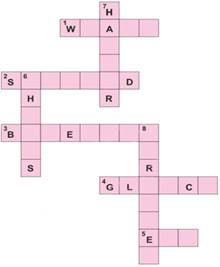
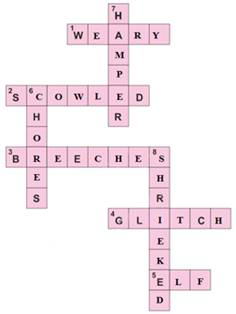
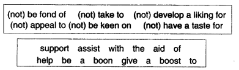
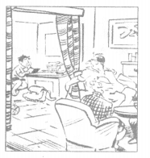

NCERT Solutions
NCERT Solutions for Class 6 English Chapter 1 Who Did Patrick's Homework
Working With the Text (Page 11)
Note: We are providing four alternate answers of each questions so don't be confused.
1. What did Patrick think his cat was playing with? What was it really?
Answer: Patrick thought that his cat was playing with a little doll. It was, in fact, a very small-sized man, an elf.
Answer: Patrick thought that his cat was playing with a little doll. The cat was actually playing with an extremely tiny man, who wore a woollen shirt with old fashioned britches and a high tall hat.
Answer: Patrick thought that his cat was playing with a little doll but it was really a man of the tiniest size.
Answer: Patrick thought that his cat was playing with a little doll. It was not a doll, but a tiny man (elf) wearing woolen shirt with old-fashioned trouser.
2. Why did the little man grant Patrick a wish?
Answer: Patrick had saved the tiny man’s life from the cat by not handing him back to the cat. So he promised to fulfil one wish of Patrick.
Answer: The little man granted Patrick a wish because he wanted to escape from the cat.
Answer: The little man granted Patrick a wish because he wanted to get free from cat.
Answer: The little man granted Patrick a wish because he saved the tiny man from the cat.
3. What was Patrick’s wish?
Answer: Patrick hated doing homework. His greatest wish was that the little man should do all his homework till the end of the session.
Answer: Patrick’s wanted the elf to do all his homework till the end of the semester, for 35 days.
Answer: Patrick wanted the little man to do all his homework till the end of the semester, which was for 35 days.
Answer: Patrick wanted the little man to do all his homework till the end of the semester for 35 days.
4. In what subjects did the little man need help, to do Patrick’s homework?
Answer: The little man needed Patrick’s help in maths, English and history.
Answer: To do Patrick’s homework, the little man needed help in English, Maths and human history.
Answer: The little man needed Patrick’s help in English, Maths and human history.
Answer: The little man needed help in finding the meaning of a word from the dictionary. He needed help in English, Mathematics and History.
5. How did Patrick help him?
Answer: Patrick sat beside the little man and guided him. He brought books from the library and read out to him.
Answer: Patrick helped him by working harder than ever. He even stayed up at nights.
Answer: Patrick helped him by consulting a dictionary, guiding the little man in doing sums in arithmetic and read out portions from history book.
Answer: Patrick worked harder and visited the library many times. He was working-till late nights and was going to school with his eyes puffed and bleary.
6. Who do you think did Patrick’s homework – the little man, or Patrick himself? Give reasons for your answer
Answer: It was Patrick himself who actually did all the homework because he had to help the elf again and again with guidance and books.
Answer: Patrick himself did his homework. Since the elf did not know anything, Patrick stayed up at nights and worked hard. As a result of this, he got A’s in his work and his teachers were full of praise. Even his parents wondered as he kept his room clean and had developed a new attitude. Therefore, it was Patrick who did the homework, not the little man.
Answer: It was not the little man but Patrick himself had did his homework as little man did not know anything, in English, maths and human history. Patrick had to consult dictionary, guide him with maths and help him to read too. He stayed up at nights and worked hard. Therefore, it was Patrick who did the homework..
Answer: Patrick himself did his homework because the tiny man made him to do it. He told Patrick to find the meaning of a word from a dictionary and help him in history and solve mathematics problems. Patrick had to help the elf again and again.
A. Fill in the blanks in the sentences below with the words or phrases from the box. (You may not know the meaning of all the words. Look such words up in a dictionary, or ask your teacher.)out of luck, mystery, true to his word, chores, semester, between you and me, look up
B. Use the clues given below to complete this crossword puzzle.
Across
1. very tired
2. had an angry look on the face
3. short trousers
4. a fault in a machine that prevents it from working properly
5. a small and naughty boy-fairy
Down
6. work that must be done every day, often boring
7. a basket with a lid
8. gave a short, high-pitched cry
Answers:
1. Do you agree with what the poet says? Talk to your partner and complete these sentences.
(i) A house is made of ___________________.
(ii) It has ___________________.
(iii) A home is made by ___________________.
(iv)It has ___________________.
Answers:
(i) A house is made of ( brick, stone, cement, hard wood, window glass, and a yard ).
(ii) It has ( eaves, chimneys, tile floors, stucco, roof, and lots of doors ).
(iii) A home is made by ( family members ).
(iv) It has ( unselfish acts, sharing, and caring for the loved ones ).
A. in the story Patrick does difficult things he hates to do, because the elf pretends he needs help. Have you ever done something difficult or frightening, by pretending about it in some way? Tell your classmate about it.
Answer: Yes, once I was told to participate in a play to be performed on the occasion of the Annual Day of the school in front of teachers, principal and parents. I was afraid because I had never performed in front of such a large audience. However, my parents and teachers helped and encouraged me and I played my part perfectly.
Say what you feel about homework. (The words and phrases in the boxes may help you.) Do you think it is useful, even though you may not like it? Form pairs, and speak to each other.
For example: You may say, “I am not fond of homework.” Your partner may reply, “But my sister helps me with my lessons at home, and that gives a boost to my marks.”
Answer:
Teena- I am not very fond of keeping my room clean and tidy.
Kshama- But my sister does all this for me.
Teena- I have not developed a liking for non-veg.
Kshama- But my elder brother does not support me.
Teena- I have taken to playing football.
Kshama- I have developed a liking for chess also.
Teena- I appeal to my friends to play some game.
Kshama- Sports can be a boon in career making.
Teena- They give a boost to my confidence.
Kshama- My deskmate is keen on getting ‘A’ grade.
Teena- I hope he will assist me also in preparing my lessons.
A. This story has a lot of rhyming words, as a poem does. Can you write out some parts of it like a poem, so that the rhymes come at the end of separate lines? For example:
Patrick never did homework. ‘Too boring”, he said.
He played baseball and Hockey and Nintendo instead.
Answer:
The man of the tiniest size
was true to his word and wise
Patrick saved the elf from the cat
The elf promised to do all that
Patrick loved sports and hated homework
He wasted his time and studies shirk
B. Look at these sentences.
C. Rewrite the following incomplete sentences carefully, so that the reader does not have to guess what is left out.
1. more and more books.
Answer:
1. The writers and poets read more and more books.
Patrick must read more and more books to increase his knowledge.
2. too difficult.
2. This personal question is too difficult to answer.
The sums are too difficult to be solved by Patrick.
3. got up late, missed the bus.
3. When I got up late yesterday morning, I missed the school bus.
Patrick could not reach the school in time and not could appear in the exam because he got up late and missed the bus.
4. solved the mystery.
4. Lord Krishna solved the mystery of life after death
Only scientists could solve the mystery behind the expanding universe.
D. Look at this cartoon by R. K. Laxman. Read the sentence given below the cartoon. Discuss the following questions with your partner.
1. What is it about?
Answer:
The cartoon is about a child being overburdened with his homework. He is under pressure while doing his homework. He is being monitored by his elders so that he can concentrate on his homework.
It is about a father’s concern for the betterment of his child.
2. Do you find it funny? If so, why?
Answer:
No, I don’t find it funny because it tells us about the problems in our education system. It is affecting the lives of our children and needs to be addressed. Too much homework is not good for a child’s health.
Yes, the cartoon is really funny. Father orders the child to labour (to work hard) with his studies. But he forbids the boy to read the laws against child labour.
3. Do you think a cartoon is a serious drawing? Why or why not?
Answer:
Yes, a cartoon is a serious drawing because it makes us aware about problems which persist in our society. The way it conveys its message is humorous, but it makes us think about the issue.
A cartoon is chiefly meant to make us laugh. It is also a serious drawing in one sense. It draws our attention to some problem that affects us all.